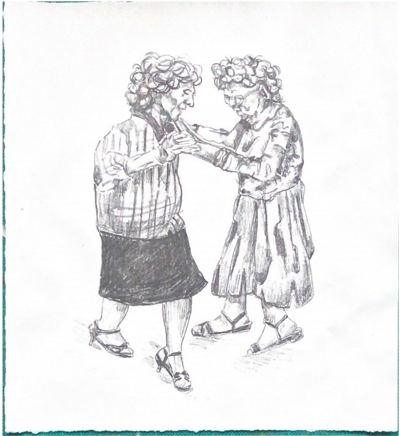
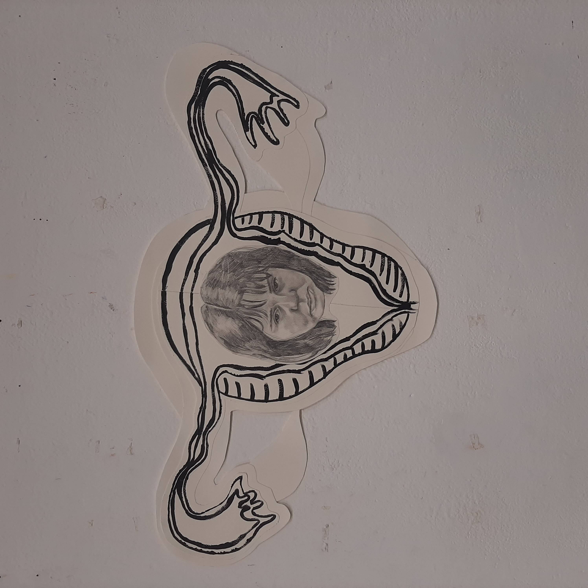

Viejitas diacharacheras
Algrafia. Litógrafia en aluminio. 2025
Un par de señoras

Papá, tengo frio
Algrafia. Litófrafia en aluminio. 2025
Le dije a mi papá que tenia frio, y sin dudarlo, me trajo una manta.
S/T
Lapiz mina y acrílico sobre papel recortado. 2025
En el utero de mi madre.